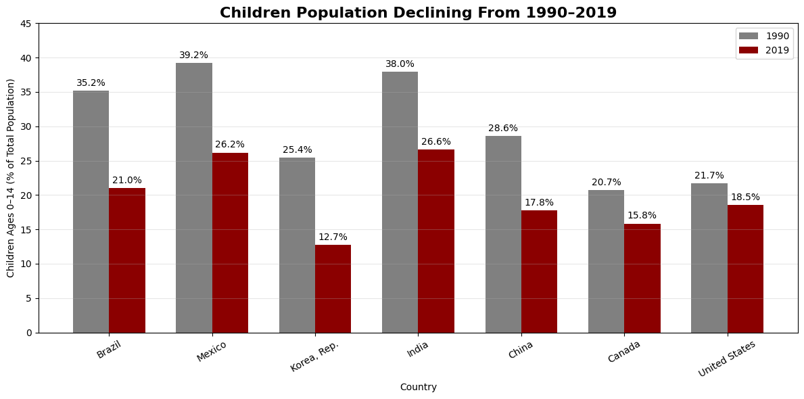
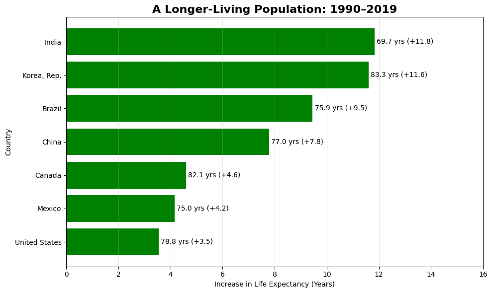

Proposition: Is the Human Population in a State of Decline?
FOR the Proposition

Design Decisions and Rationale:
- Color Encoding: I used gray and dark red for the two years. I chose these two colors so the stark difference from the two years would stand out and emphasize that there is a downward trend. The use of dark red also makes the change appear more alarming.
- Selective Country Selection: I chose seven countries that experienced sizable declines in the percentage of children. I focused on countries that are well known to many and that would persuade readers that the decline of children populations is a worldwide issue.
- Misleading Title: Lastly, I used a misleading title that stated children population is declining. I did this to give the readers an idea of what they will see and may also lead them to misinterpret the data. The y-axis shows the percentage of children in a population but this does not show the actual number of children, which could have shown a different story
AGAINST the Proposition

Design Decisions and Rationale:
- Color Encoding: The use of green was intentional to emphasize that every country is showing positive growth from 1990 to 2019 in life expectancy. I chose green because we associate green with good which would make these changes appear as a postive.
- Selective Country Selection: I purposely chose countries that displayed increases in life expectancy and are also well known countries around the world. Using large and medium sized countries can persuade the reader that the human population is not at risk because people are living longer.
- Positioning: For this visualization, I chose to display the countries on the y-axis so the reader could read and compare from left to right. In addition, I organized the data and combined that with showing the percentages and the plus signs to emphasize a positive trend. Doing so can mask the fact that some countries have a large increase in life expectancy but their overall life expectancy is still lower than other countries.
Final Reflection
For my final submission, I decided to change my proposition question and my against visualization. I chose to alter my original question because I wanted it to be more open ended so that both sides could have compelling arguements. This also led me to replace my against visualization from using working age population data to life expectancy. I did this because it showed a better contrast to the idea that there are less humans being born causing a decline in human population.
My FOR visualization focused on percentage of children ages 0-14 and I did this because declining birth rates is a common concern brought up nowadays. The use of dark red was used due to human's innate understanding that red means bad/danger. I adjusted this visualization as well by adding two bars for each country that represented the different years and adding their percentages on the top of the bars. I did this because my original visualization had a single bar for each country falling down with negative numbers on the y-axis which was difficult to read the more I reviewed it. My AGAINST visualization was originally a horizontal bar chart showing percentage of working age population. Similar to the FOR visualization this was difficult to read and follow so I chose to focus on life expectancy. I still kept the countries on the y-axis and the percent increase on the x-axis as it highlighted that each country is increasing. Having adjusted both my visualizations, I now believe my FOR visualization is more persuasive because the negative trend is greater among the seven countries compared to their positive trend in the AGAINST visualization.
One of the biggest things I learned from this project is how easily data can be presented in a way that influences someone's interpretation. Both visualizations use actual data, but I purposely selected certain countries, colors, titles, and ways of displaying the information to support opposing arguments.